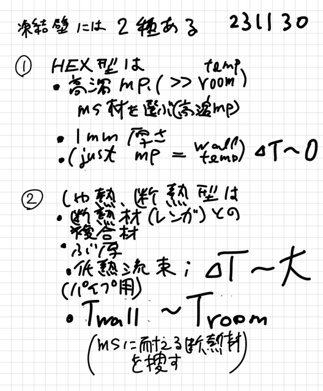
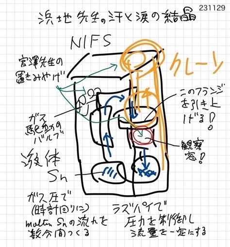

凍結壁の考え方¶
tag=18b33c7f5c78
（NEW）実験の発想（その１） 実験の発想（その１） （NEW）実験の発想（その１）
(1) 凍結壁¶
凍結壁には２種類あって、開発戦略が分かれる {231203}¶
（その１）低熱抵抗型（HEX型、熱交換器）¶
運転温度を上げるために、高融点の熔融塩材料を選択する
例、(Na,Ca)F, FLiCa,
融点は 700℃以上 〜800℃、（容器材料は現時点では無いため）溶融塩凍結壁で実現する
できるだけ、固化した熔融塩の厚さを小さくする（1cm 〜1mm）、（溶融塩の熱伝導度が低いため）、
熱抵抗（凍結壁＋容器壁）による温度低下（ΔT）を極力小さくする。
（目標・開発戦略）HEX（熱交換器）にも使える技術にまで成熟させる
（その２）高熱抵抗型（遮熱、断熱型」）¶
（イメージとして）溶鉱炉（Smelter）で断熱材のレンガに炉内のスラグが固化してとビリ付いている凍結壁。
・・・・古代から（金属精錬や鉄器が発明された数千年前がら）ある考えで、古典的であり、貧者の発想でもある・・・
断熱材と固化溶融塩の複合材が容器金属の内面に貼り付いている、
凍結壁（残熱剤との複合）の厚さは厚い（〜1cm、配管の場合）
流れに対する耐性は、断熱材で保証する（機械的郷土は不要、ただし長期使用でも剥がれたりばらばらにならない安定性は要求される）
グラファイトないしSiCなど溶融塩と相性の良い材料でのハニカム的な（隙間の多い、場合によってはアルゴンやキセノンを内蔵する）構造とする、
低熱流束で壁で遮熱する。温度差（ΔT）は大きい。
金属容器の外側温度はｍ環境温度（例えば室温）に近い温度とする、
（目標・開発戦略）腐食速度を遅らせ、（安価／延性あり／加工性あり）な金属材料で配管／容器を制作できる
付録¶
手書きメモ
{kind=link}
(2) 実験をどうするか？¶
アイディア（021） 氷とドライアイスでの実験¶
{231129}
設計計算をして、予測と実験が合うかどうかを確かめる。
（知りたい）中央で沸騰させた外をドライアイスで冷やし、凍結壁ができたら、 どれくらいの厚さ になるか？
{kind=link}
(3) （参考）NIFS 浜地ループ （sweat&tears）¶
融解した錫の循環ループ¶
（感想） ループの作り、浜地先生は我々の仕事も参考にされ、よく考えてある。
{kind=link}
動作の説明
ガス圧力（アルゴン）で 15分程度の連続的な流れをつくる、
フランジは手動のクレーンで釣り上げる音ができる
大型の観測窓があり、そこから内部の流れの様子（金属スズを傾けた板の表面の上の流し落としている）
バルブの制御（on/off）はガス圧による、
流れの制御は、ガス流れ・フローメータ（一定流量でガスを流す調速機）を用いて、ドレンタンクに流すガスの時間あたりの量を設定している、
流束を一定にするため、（制御用の計測値として何を見ているかは聞きそこなった）プッシャーのガス流束超速装置の制御はRaspberryPiを用いている。
実験の発想（その１）¶
（隔壁を設ける）穴開きのかごを内側に設置し、かごと容器内壁の間に氷を生成させる
（最初の実験では水を使うのでプラスチックでも可能）
（隔壁の目的）隔壁は、内壁のあるいは容器の機械的強度を保つためではなく、凍結部分の形状安定性、を保つため。したがって材料は実機ではカーボンで製作可能と考える。
（設計計算の習熟）
しっかり、温度分布を計測する。
（隔壁形状の最適化）（目的は、安価な形状とすること）
穴の大きさなど。
{kind=link}
実験の発想（その２）¶
（目的） 凍結壁、ループ、ポンプ
インペラー（軸流ポンプ、押し出し形）に、 凍結壁の考えが使えないか？ ためしてみたい。
縦の寸法をつめた縦型ループを製作し、基本、ポンプ駆動で一定流を流し、材料試験に供与する。
{kind=link}
インデックス（索引）¶
oooooooooooo oooooooooooooooo end of document ooooooooooooooo oooooooooooooo